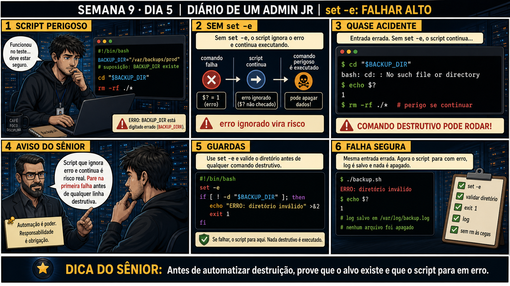

DIARIO DE UM ADMIN JR. | FASE 1 — LINUX, DO BÁSICO AO AVANÇADO
🔗 Conecta com a semana inteira: shebang, condicionais, loops e funções te
deram um script funcional. Hoje fecha a Semana 9 com a peça que falta: o que acontece quando um comando
DENTRO do script falha — e por que deixar isso passar em silêncio é o erro mais perigoso de todos.
🔓 Privilégio de hoje: escrever scripts que param na primeira falha, em vez de
continuar às cegas. Você ganha o hábito de usar set -e e validar pré-condições antes de qualquer comando
destrutivo.
Semana 9 · Dia 5 | Nível Júnior
set -e: Falhar Alto
antes de automatizar destruição, prove que o alvo existe e que o script para em erro
ANTES DE ALTERAR, OBSERVE. DEPOIS DE ALTERAR, VALIDE.

1. O chamado
Seu script backup.sh "funcionou no teste", então deve estar seguro. Mas ele
tem um erro de digitação (BACKUP_DIRR em vez de BACKUP_DIR) e nenhum tratamento
de erro — se o cd falhar silenciosamente, o rm -rf ./* seguinte pode rodar no
lugar errado.
💡 Passa o mouse nas palavras destacadas pra ver uma dica rápida — clica se quiser a explicação completa com analogia.
2. O sênior te conta
Sexta-feira, fechando a Semana 9
Shebang, condicionais, loops, funções — a semana inteira te deu as peças de um script funcional. Hoje
fecha com a peça mais importante de todas: o que acontece quando um comando DENTRO do script falha, e
ninguém percebe.
O chamado que fecha essa semana pra mim foi um backup.sh que "funcionava no teste". Tinha
um erro de digitação bem sutil: em algum lugar do script, alguém tinha escrito
BACKUP_DIRR em vez de BACKUP_DIR — uma letra a mais. O bash não reclama disso.
Ele simplesmente trata BACKUP_DIRR como uma variável nova, vazia, sem avisar nada. O script
tinha um cd "$BACKUP_DIR" seguido de rm -rf ./*. Numa execução com o typo
presente, o cd falhou silenciosamente — e sem nenhuma proteção, o script continuou pro
próximo comando de qualquer jeito.
O que salvou aquele dia foi sorte, não boa prática: o cd falhou justamente porque o
diretório não existia, então o shell ainda estava na pasta de onde o script foi chamado — e não era um
lugar catastrófico pra rodar um rm -rf ./*. Mas poderia ter sido. Um sênior mais
experiente me mostrou duas camadas de proteção que eu não tinha: set -e, que faz o script
parar assim que QUALQUER comando falhar, em vez de continuar cegamente; e validação explícita —
checar com [ ! -d "$DIR" ] se o diretório realmente existe, ANTES do comando destrutivo,
com uma mensagem de erro clara.
set -e sozinho não é suficiente — ele reage a códigos de erro, não a lógica de negócio (tipo
"esse é realmente o diretório certo pra apagar?"). As duas camadas juntas são o que separa um script que
"funcionou no teste" de um que está pronto pra produção. Hoje você pratica exatamente isso, fechando a
Semana 9 com a disciplina que sustenta tudo que vem depois: nunca automatizar destruição sem primeiro
provar que o alvo existe.
3. Decodificador de conceitos
Clica em qualquer termo pra ver a definição completa e uma analogia do dia a dia:
4. Ferramentas e leitura da evidência
Elemento
O que observar e por que importa
set -e
Encerra o script imediatamente se qualquer comando falhar, em vez de continuar ignorando.
[ ! -d "$DIR" ] && exit 1
Guarda explícita — valida a pré-condição antes de qualquer comando destrutivo.
echo $?
Mostra o código de saída do último comando — 0 é sucesso, diferente de 0 é erro.
--- sem proteção, entrada errada ---
$ cd "$BACKUP_DIR"
bash: cd: : No such file or directory
$ echo $?
1
$ rm -rf ./* # perigo se continuar!
--- com set -e e validação ---
#!/bin/bash
set -e
if [ ! -d "$BACKUP_DIR" ]; then
echo "ERRO: diretório inválido" >&2
exit 1
fi
$ ./backup.sh
ERRO: diretório inválido
$ echo $?
1
# nenhum arquivo foi apagado
5. Laboratório guiado — pegue na mão, comando por comando
Segurança: execute os testes apenas em VM descartável e confirme nomes de discos, hosts e arquivos antes de cada comando.
Ação: escreva um script SEM set -e, com um cd pra uma variável não definida, e observe que ele continua rodando mesmo assim.
Resultado esperado: "continuei" aparece na tela mesmo com o cd tendo falhado silenciosamente — reproduzindo exatamente o risco da história.
Por que fizemos isso: ver o script continuar depois de uma falha real, sem nenhum aviso, é o que faz o perigo do "backup.sh funcionou no teste" deixar de ser abstrato.
Cilada comum: testar só o caminho feliz (variável definida corretamente) e nunca descobrir esse comportamento até ele acontecer com dados reais em produção.
Ação: adicione set -e no início e teste de novo.
$ sed -i '1a set -e' teste.sh
$ ./teste.sh; echo "exit code: $?"
Resultado esperado: o script para no cd que falhou — "continuei" nunca aparece, e o exit code confirma erro.
Por que fizemos isso: essa é a primeira camada de proteção que teria mudado o desfecho da história — parar automaticamente em vez de seguir cegamente.
Cilada comum: achar que set -e sozinho já é proteção completa — ele reage a código de erro, mas não valida se a lógica de negócio (esse é o diretório certo?) está correta.
Ação: adicione uma validação explícita com [ ! -d ] antes do cd, com mensagem de erro clara.
$ cat > teste.sh << 'EOF'
#!/bin/bash
set -e
if [ ! -d "$PASTA_ERRADA" ]; then
echo "ERRO: diretório inválido" >&2
exit 1
fi
cd "$PASTA_ERRADA"
echo "continuei"
EOF
$ ./teste.sh; echo "exit code: $?"
Resultado esperado: mensagem "ERRO: diretório inválido" — mais clara e específica que o erro genérico do cd.
Por que fizemos isso: essa é a segunda camada, a que realmente garante segurança — set -e para o script, mas é a validação explícita que garante que ele nunca chega perto do comando destrutivo com um alvo errado.
Cilada comum: confiar só na mensagem genérica de erro do cd — ela não diz claramente ao próximo operador (ou a você mesmo, meses depois) o que realmente deu errado.
🧑🏫 Aqui entra o Mentor (em breve): se set -e não parar o script onde você esperava, este é o ponto onde o chat com o Sênior-IA vai ajudar a identificar por que aquele comando específico não disparou a proteção.
Ação: teste o script com um diretório válido, confirmando que ele continua funcionando normalmente no caminho de sucesso.
$ PASTA_ERRADA=/tmp ./teste.sh
Resultado esperado: "continuei" aparece normalmente — a proteção não atrapalha o caso válido, só bloqueia o inválido.
Por que fizemos isso: confirmar que o caminho feliz continua funcionando é o que garante que a proteção não virou um obstáculo pro uso normal do script.
Cilada comum: testar só o caso de erro e nunca confirmar que o caso de sucesso continua passando — uma proteção mal escrita pode bloquear até entradas válidas.
Ação: documente cenário testado sem proteção, com set -e, com validação explícita — fechando a Semana 9.
# anote no seu diário de bordo:
Sem proteção: script continua após cd falhar silenciosamente
Com set -e: script para, mas com erro genérico do cd
Com validação explícita: mensagem clara "ERRO: diretório inválido", exit 1
Caso válido: continua funcionando normalmente
Resultado esperado: registro completo reproduzindo o painel 6 da prancha de hoje.
Por que fizemos isso: esse comparativo documentado é o que prova, pra qualquer revisão futura, por que as duas camadas juntas são necessárias — não uma ou outra isoladamente.
Cilada comum: documentar só a versão final "corrigida", sem registrar o comportamento perigoso original — sem esse contraste, fica difícil explicar pra outra pessoa por que essas duas linhas extras importam tanto.
6. Antes de ver as opções — tenta responder
🧠 Recall ativo: o que set -e faz, e por que ele sozinho não é suficiente pra um
script realmente seguro?
set -e faz o script
parar assim que QUALQUER comando falhar (código de saída diferente de zero), em vez de continuar
ignorando o erro. Mas ele sozinho não substitui
validação explícita —
é preciso ainda checar pré-condições (como o diretório existir) antes de comandos destrutivos.
QUESTÃO 1 de 3
7. Questão comentada — clica numa alternativa
Seu script tem cd "$BACKUP_DIR" seguido de rm -rf ./*, mas BACKUP_DIR está
digitada errada em algum lugar e o cd pode falhar silenciosamente. Qual é a correção correta?
💡 Analogia do Sênior para Fixar: A diretiva 'set -e' (ou set -o errexit) é o botão de emergência da máquina: se qualquer comando falhar com erro, o script para imediatamente antes de piorar a situação.
QUESTÃO 2 de 3 — cenário de erro real
7.1 Com a mesma entrada errada, o script agora para com "ERRO: diretório inválido" — o que isso prova?
O mesmo cenário de digitação errada em BACKUP_DIR agora resulta em uma mensagem de erro
clara e exit 1, em vez de continuar até o rm -rf.
O que essa mudança de comportamento demonstra sobre o script?
💡 Analogia do Sênior para Fixar: A diretiva 'set -u' (nounset) é o sensor de peça faltando: impede que o script execute se você usar uma variável que nunca foi declarada (evitando desastres como rm -rf /$VARIAVEL_VAZIA).
QUESTÃO 3 de 3 — detalhe que confunde todo iniciante
7.2 "set -e já protege contra tudo, não preciso mais validar nada manualmente?"
Um colega assume que, com set -e ativado, ele não precisa mais escrever nenhuma validação
explícita no script.
Essa suposição está correta?
💡 Analogia do Sênior para Fixar: A diretiva 'set -o pipefail' é o fiscal da esteira: se o primeiro comando de um pipe falhar, o script considera a linha inteira como erro, mesmo que o último comando pareça ter dado certo.
8. Procedimento profissional
Sempre adicione set -e logo após o shebang, em scripts de produção.
Valide explicitamente pré-condições necessárias antes de comandos destrutivos.
Use mensagens de erro claras (>&2) e exit com código diferente de zero.
Teste o script deliberadamente com entradas inválidas, não só válidas.
Confirme com $? que o script realmente para e não executa o resto silenciosamente.
Prevenção
Crie um template padrão de script novo com set -euo pipefail já incluído
logo após o shebang (ver glossário: set -u pega variável não declarada, set -o pipefail pega falha no
meio de um pipe). Um script que já nasce com essas três proteções nunca corre o risco de alguém esquecer
de adicioná-las depois.
9. Validação e encerramento
set -e está presente logo após o shebang em scripts de produção.
Pré-condições necessárias são validadas explicitamente antes de ações destrutivas.
Mensagens de erro claras e exit codes corretos foram testados.
O script foi testado deliberadamente com entrada inválida, não só o caminho feliz.
Rollback e limites
set -e e validações explícitas não são destrutivos — não existe rollback
necessário. O risco real é justamente NÃO ter essas proteções, que é exatamente o que esse dia corrigiu.
💡 Sobre repetição espaçada: "prove antes de destruir" fecha a Semana 9
conectando com o ritual de rm (Semana 2) e --dry-run (Semana 6, 8) — a mesma disciplina, agora automatizada
dentro do próprio script. O Anki vai conectar os quatro.
10. Resposta final
Alternativa correta: B. Nesta aula, a decisão correta foi adicionar
set -e no início do script, e validar explicitamente com [ ! -d "$BACKUP_DIR" ] antes de qualquer comando
destrutivo. O ponto central do caso é este: antes de automatizar destruição, prove que o alvo existe e
que o script para em erro.
🔓 O que você desbloqueou hoje
Capacidade de escrever scripts que falham com segurança, fechando a Semana 9
e os fundamentos de bash scripting. Semana 10 começa com scripts prontos pra produção de verdade —
começando por um backup automatizado que verifica cada etapa.